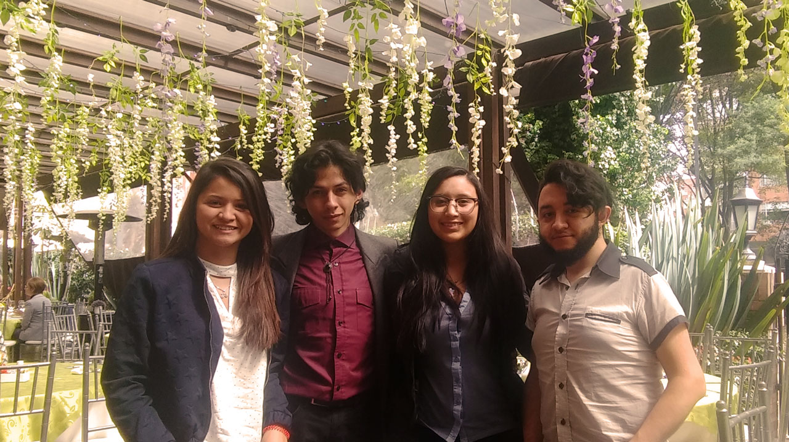

Nosotros
Las personas dedicadas al trabajo sexual son un foco de captación para las redes de trata de personas. El servicio de webcaming es, en últimas, un trabajo sexual que hecha mano de las nuevas tecnologías que generan un cambio necesario en los mecanismos por los cuales nos interrelacionamos, enfrentando a quienes a este servicio se dedican a un peligro frente a la captación de personas en el marco de la trata con finalidad de explotación sexual.
Esta vulnerabilidad se potencia en tanto que las personas que se dedican al trabajo sexual han sufrido de vieja data una fuerte estigmatización social que desemboca en la insensibilidad generalizada frene a los riesgos a los que se enfrentan, a fortiori en una sociedad que conserva rasgos heteropatriarcales, siendo el trabajo sexual una opción asumida mayoritariamente por mujeres, y en, buena parte, también por personas de la comunidad LGBTI.
Teniendo en cuenta la desconfianza que las personas vulnerables suelen tener frente a la institucionalidad que representa un establecimiento dentro del que se sienten oprimidos, Bee Free & Safe permite generar un instrumento a partir del cual, de manera autónoma las personas que hacen parte de la industria del cíbertrabajo sexual puedan generar mecanismos en que se identifiquen como víctimas ante las agresiones actuales o potenciales relativas a la trata de personas, y a su vez se tomen medidas celeras y efectivas para contrarrestar este fenómeno, habilitando, en segundo lugar, la posibilidad de, si lo desearen, pusieren una situación delictiva en conocimiento de las autoridades oficiales y, en último termino, ayuden a la construcción de bases de datos a partir de las cuales se estudie el fenómeno de la trata desde enfoques criminológicos y victimológicos que permitan el entendimiento del fenómeno delictivo que combate, material este que puede ser utilizado por la Fiscalía General de la Nación para la desarticulación de organizaciones criminales sin afectar el anonimato de las víctimas.